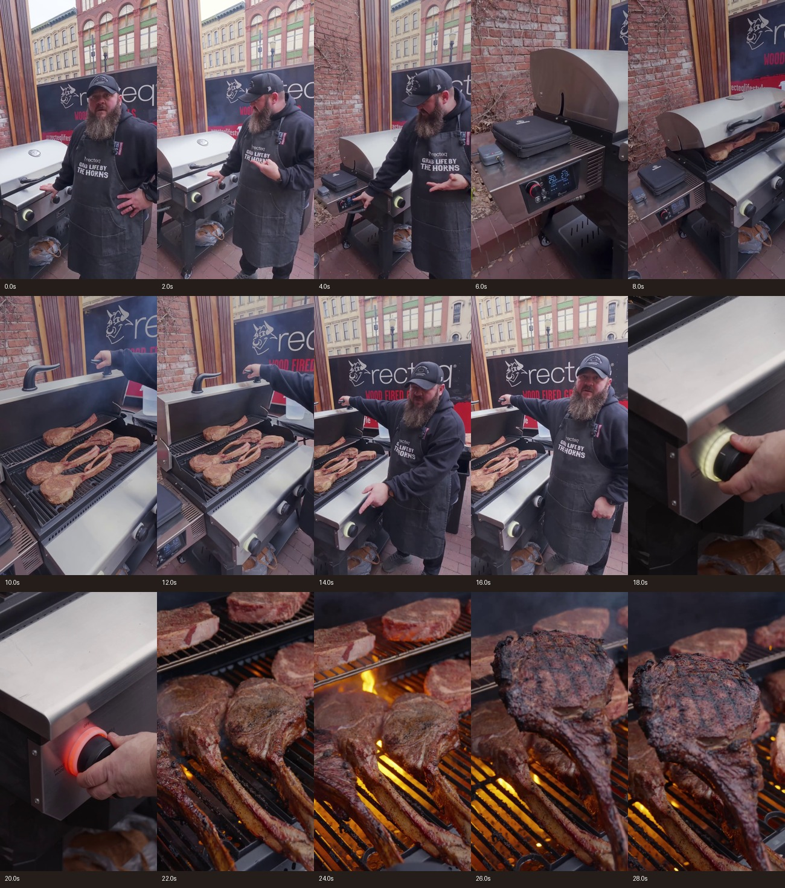
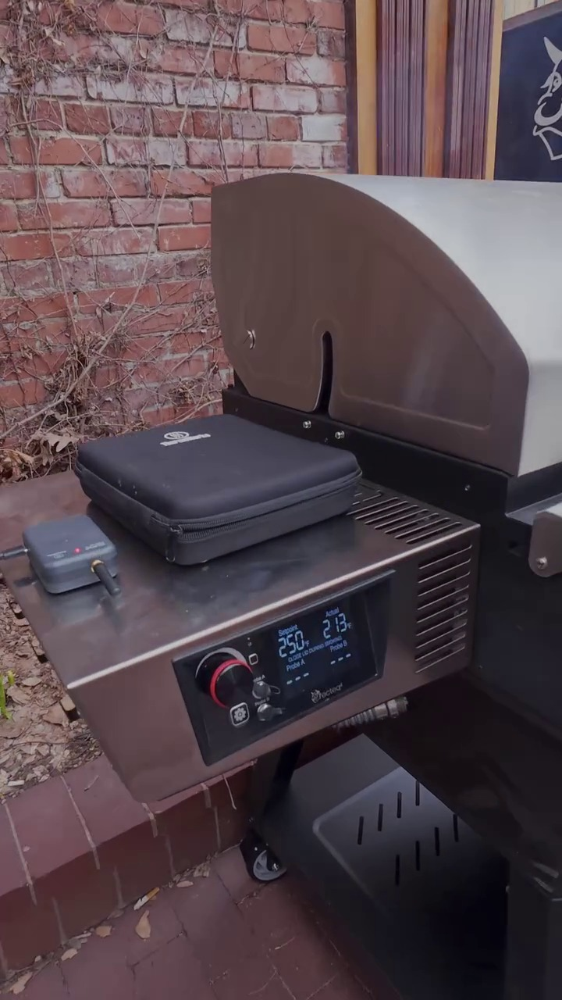
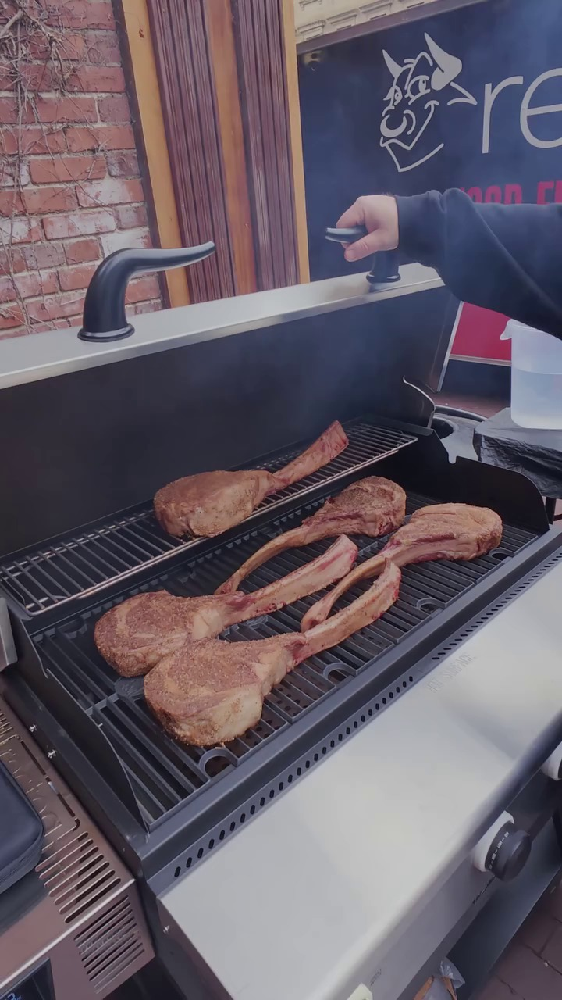
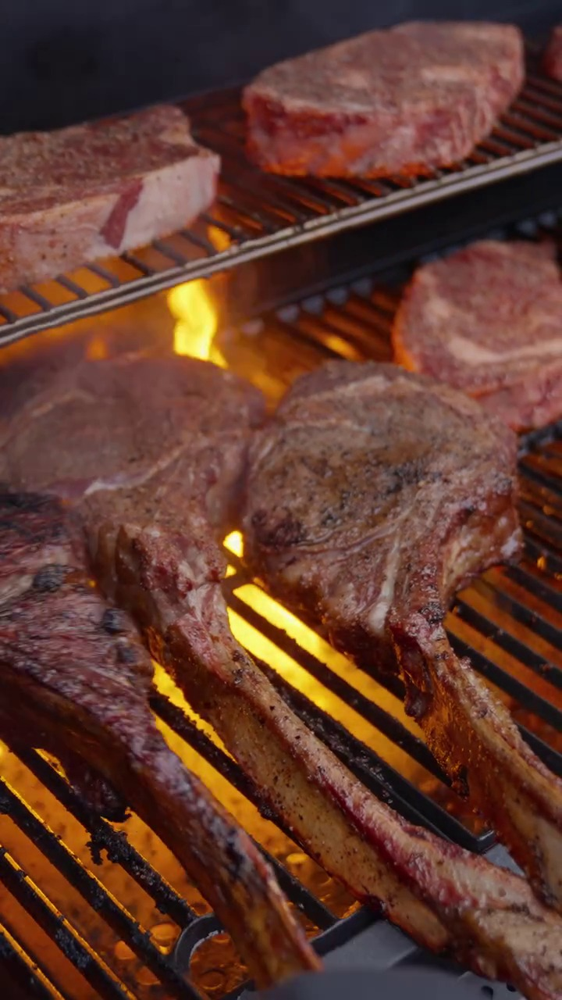
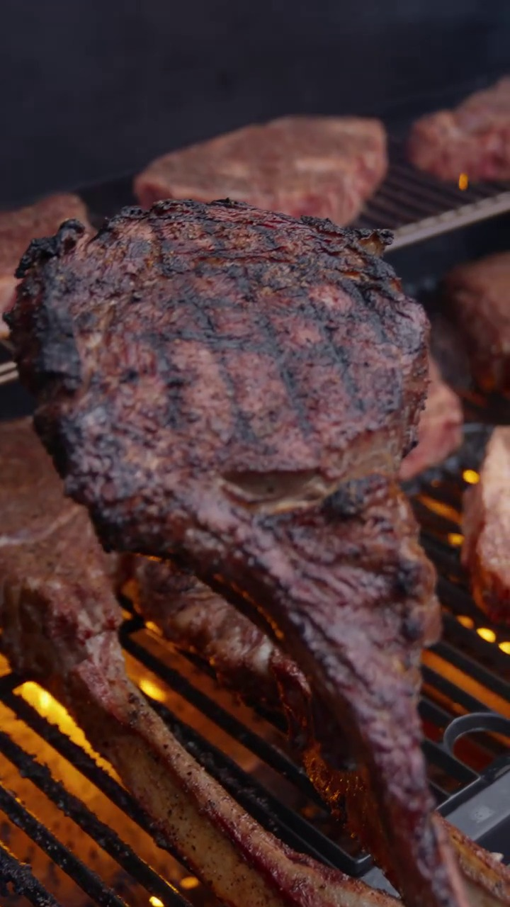
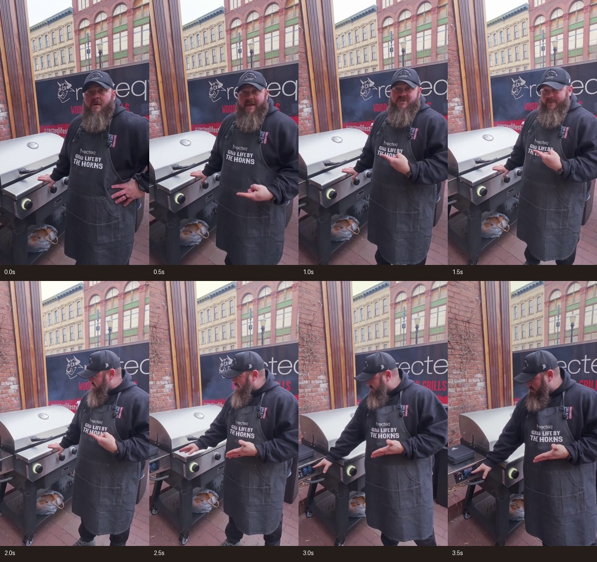

证据边界：视频画面、时长和镜头结构已经根据用户提供的 MP4 核验。产品参数来自 recteq 官方 PDP。当前没有 Meta 后台投放数据，也没有对音频口播逐字转录，因此 CTA 和真实 performance 仍需结合广告卡片与账户数据确认。
Original Creative
用户提供的 Meta 广告视频。点击播放可直接对照拆解。
Quick Judgment
这是一条 MOF 偏强的 creator product demo。 它的核心不是情绪叙事，而是把 DualFire 1200 的产品差异直接演示出来：双腔、不同用途、旋钮操作、直火炙烤和最终牛排结果。
最强部分：后半段火焰与牛排近景形成明确 proof，机制和结果连得起来。
最大缺口：开头 0-3 秒较静态。真人已经出镜、产品也可见，但最有停留价值的火焰和成品直到后半段才出现。
Confirmed: DualFire 1200Confirmed: Creator DemoConfirmed: Product ProofNeeds Data: CPA / ROAS
Tagging
| 维度 | 标签 |
|---|---|
| 命名 | recteq_DualFire1200_MOF_CreatorDemo_Versatility_TalkingHead_30s_V1 |
| Main Angle | Versatility / More Control / Better Result |
| Hook | Creator Talking Head + Product Visible Early |
| Proof | Dual-Chamber Demo / Controller Close-Up / Direct-Flame Demo / Food Result |
| CTA | 视频内未出现明确 CTA；需核验广告卡片按钮 |
| Funnel | MOF 主用；剪辑改造后可做 TOF |
Creative Structure
| 时间 | 画面 | 作用 | 判断 |
|---|---|---|---|
| 0-4s | Creator 站在 grill 旁正面讲解，产品完整入镜 | 建立真人可信度与产品类别认知 | 清楚，但停留力有限 |
| 4-8s | 镜头靠近控制区与双腔结构 | 进入产品机制解释 | 从 talking head 转为 demonstration |
| 8-16s | 打开大烹饪腔，展示多块肉与容量 | 证明聚会、家庭烹饪和 low-and-slow 使用场景 | 画面信息密度高 |
| 18-20s | 旋钮特写，操作后灯环变化 | 让控制感可视化 | 可用于单独剪成 feature proof |
| 22-29.9s | 直火、火焰、牛排炙烤和成品近景 | 把高温能力转为强视觉结果 | 全片最适合做 TOF Hook 的素材 |
Full Visual Timeline

每 2 秒抽取一帧。广告从 creator 讲解逐步转为双腔展示、旋钮操作和明火炙烤。




First 0-3 Seconds

0-3.5 秒，每 0.5 秒抽取一帧。
Hook Diagnosis
- 产品在首帧出现，类别识别没有问题。
- Creator talking head 提供真人感，但画面变化小。
- 没有先展示最强结果：火焰、牛排 close-up、双腔同时工作。
- 对于已经知道 pellet grill 的 MOF 用户，开头可以成立；对于冷流量，未必能最大化 thumbstop。
建议只改 Hook，保留后续主体
- Result First：先放 24-28s 火焰与牛排，再切回 creator。
- Comparison Hook：首帧双腔同框，字幕表达 smoke on one side, sear on the other。
- Question Hook：用一个 pellet grill 同时 slow-cook 和 sear，画面立即给出答案。
Angle Fit Evaluation
| Angle | 分数 | 判断 | 视频证据 | 最佳 Funnel |
|---|---|---|---|---|
| Smoke and Sear Without Compromise 双腔 versatility | 27 / 30 | Priority Test | 双腔展示 + 明火牛排 | TOF / MOF |
| More Control, Less Guesswork 独立控制与 PID | 25 / 30 | Priority Test | 旋钮操作；PDP 支撑 PID | MOF |
| Cook for a Crowd 容量与场景 | 23 / 30 | Small Budget Test | 大烹饪腔内多块肉 | TOF / MOF |
| Built for Long-Term Ownership 材质与长期价值 | 22 / 30 | Small Budget Test | 本视频证据较弱；需补组件 close-up | MOF / BOF |
Why It May Work
- 购买动机：用户不必在 smoker 与 high-heat grill 之间选择，也不必维护两台设备。
- 相信理由：视频不是只说参数，而是展示双腔、操作过程、直火和食物结果。
- Meta 适配：火焰、牛排和开盖 reveal 都有很强的视觉表达能力。
- 限制：只有一条样本，没有投放数据，不能直接证明该 Angle 已经 scale。
Next Testing Matrix
第一轮只改变 Hook，复用本条视频主体，才能判断停留提升是否来自开头。
| 版本 | 唯一核心变化 | 开头 | Funnel | Primary KPI | Kill / Scale Rule |
|---|---|---|---|---|---|
| V1 Control | 原版 | Creator talking head | MOF | Hook rate, CTR, ATC | 作为基准 |
| V2 Result First | Hook | 24-28s 火焰 + 牛排 close-up | TOF | Thumbstop, 3s view, CTR | 停留提升且 LPV 质量稳定则放大 |
| V3 Dual Chamber | Hook | 双腔同框 + smoke / sear 表达 | TOF / MOF | Hook rate, CTR, ATC | CTR 高但 ATC 弱则检查意图与 PDP 首屏 |
| V4 Controller Proof | Proof emphasis | 旋钮操作 + 双侧控制 | MOF | CTR, VC, ATC | 适合 retargeting 与 feature education |
没有账户基准，因此不虚构统一数值阈值。以账户历史平均值判断 kill 和 scale，并在预算增加 20-30% 后复查效率。
PDP Match
| 广告表达 | PDP 支撑 | 状态 | 建议 |
|---|---|---|---|
| 双独立烹饪腔 | 官方 PDP 明确说明一侧 low-and-slow，一侧 high-heat grilling | Strong | 首屏继续强化 smoke + sear 的直观图像 |
| 高温炙烤 | 官方 PDP 给出 180°F-700°F | Strong | 广告字幕可明确写 700°F，但只用于 DualFire 1200 |
| 独立控制 | 官方 FAQ 说明两个腔体可独立使用，各有控制 | Strong | 补充双侧不同温度同屏 proof |
| 大容量 | 官方 PDP 给出 1,208 sq. in. 与 70-lb hopper | Strong | 测试家庭聚会或多人烹饪 Angle |
Primary Sources
Meta Ad Library sample: ID 988547844043415 recteq official PDP: DualFire 1200 recteq official dual-chamber collection recteq official websiteGuardrails
- 不要把 DualFire 1200 的 700°F、双腔或容量泛化到全部 recteq 型号。
- 本视频适合证明 smoke + sear versatility，不宜额外添加未展示的 App 使用承诺。
- 高温与明火画面需要保持真实、安全的使用场景。
- 没有后台数据时，不宣称该广告已经 scale。